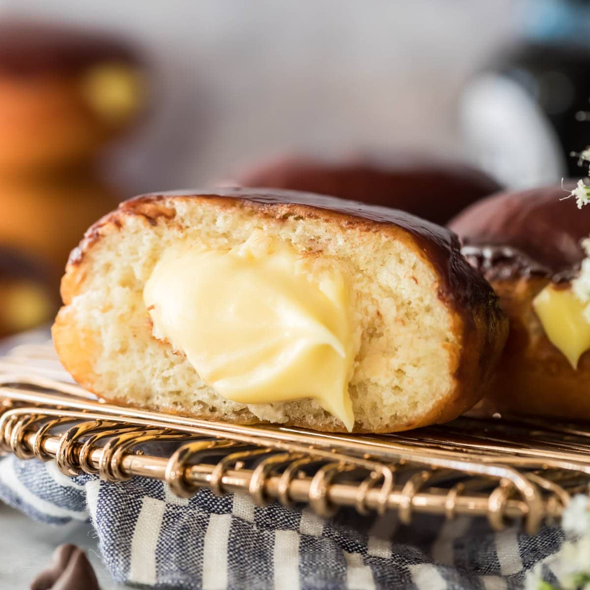

Boston Cream Donut Recipe

My favourite donuts to get at Tim Horton's was, and still is, a Boston cream donut.
So, here's a recipe!
Source
Ingredients
For the Donuts
- 1¼ cups milk
- 2¼ teaspoons (one package) active dry yeast
- 2 eggs
- 8 tablespoons (1 stick) butter, melted and cooled
- ¼ cup granulated sugar
- 1 teaspoon salt
- 4¼ cups all-purpose flour, plus more for rolling out the dough
- 2 quarts neutral oil, for frying, plus more for the bowl
For the Glaze
- 1¾ cups powdered sugar
- ¼ cup unsweetened cocoa powder
- ¼ cup milk
- 1 teaspoon vanilla
For the Pastry Cream
- ⅔ cup sugar
- 2 tablespoons flour
- 2 tablespoons cornstarch
- a pinch of salt
- 2 eggs
- 2 cups cream
- 2 tablespoons softened unsalted butter
- 2 tablespoons vanilla
Preparation
For the Donuts
- Heat the milk until it is warm but not hot, about 90 degrees.
In a large bowl, combine it with the yeast. Stir lightly, and let sit until the mixture is foamy,
about 5 minutes.
- Using an electric mixer or a stand mixer fitted with a dough hook, beat the eggs, butter, sugar and
salt into the yeast mixture. Add half of the flour (2 cups plus 2 tablespoons), and mix until combined,
then mix in the rest of the flour until the dough pulls away from the sides of the bowl. Add
more flour, about 2 tablespoons at a time, if the dough is too wet. If you’re using an electric
mixer, the dough will probably become too thick to beat; when it does, transfer it to a floured
surface, and gently knead it until smooth. Grease a large bowl with a little oil. Transfer the
dough to the bowl, and cover. Let rise at room temperature until it doubles in size, about 1 hour.
- Turn the dough out onto a well-floured surface, and roll it to ½-inch thickness. Cut out the doughnuts with a doughnut cutter, concentric cookie cutters or a drinking glass and a shot glass (the larger one should be about 3 inches in diameter), flouring the cutters as you go. Reserve the doughnut holes. If you’re making filled doughnuts, don’t cut out the middle. Knead any scraps together, being careful not to overwork, and let rest for a few minutes before repeating the process.
- Put the doughnuts on two floured baking sheets so that there is plenty of room between each one. Cover with a kitchen towel, and let rise in a warm place until they are slightly puffed up and delicate, about 45 minutes. If your kitchen isn’t warm, heat the oven to 200 at the beginning of this step, then turn off the heat, put the baking sheets in the oven and leave the door ajar.
- About 15 minutes before the doughnuts are done rising, put the oil in a heavy-bottomed pot or Dutch oven over medium heat, and heat it to 375. Meanwhile, line cooling racks, baking sheets or plates with paper towels.
- Carefully add the doughnuts to the oil, a few at a time. If they’re too delicate to pick up with your fingers (they may be this way only if you rose them in the oven), use a metal spatula to pick them up and slide them into the oil. It’s O.K. if they deflate a bit; they’ll puff back up as they fry. When the bottoms are deep golden, after 45 seconds to a minute, use a slotted spoon to flip; cook until they’re deep golden all over. Doughnut holes cook faster. Transfer the doughnuts to the prepared plates or racks, and repeat with the rest of the dough, adjusting the heat as needed to keep the oil at 375.
For the Glaze
- For the glaze, whisk together 1¾ cups powdered sugar, ¼ cup unsweetened cocoa powder, ¼ cup milk and 1 teaspoon vanilla until smooth. Dip the tops of the doughnuts in the glaze, and let it harden on a rack.
For the Pastry Cream Filling
- Combine ⅔ cup sugar, 2 tablespoons flour, 2 tablespoons cornstarch and a pinch of salt in a small saucepan. Over medium heat, whisk in 2 eggs and 2 cups cream. Continue cooking, whisking almost constantly, until the mixture just begins to boil and thickens, about 10 minutes. Adjust the heat so the mixture bubbles gently; cook until it coats the back of a spoon (when you draw your finger through this coating, the resulting line should hold its shape). Stir in 2 tablespoons softened unsalted butter and 2 teaspoons vanilla. Strain through a fine-mesh sieve, and cool to room temperature before using.
- To fill the doughnuts with the pastry cream, insert the tip of a pastry bag filled with cream into the side of the doughnut, and squeeze. (Alternatively, poke a chopstick into the side of the doughnut, and wiggle it around to hollow out some space inside. Plunge a small funnel into the hole, spoon some filling into the funnel and use the chopstick to push it into the doughnut. If the filling clumps up toward the center of the doughnut, just press lightly on the top to distribute it evenly.)